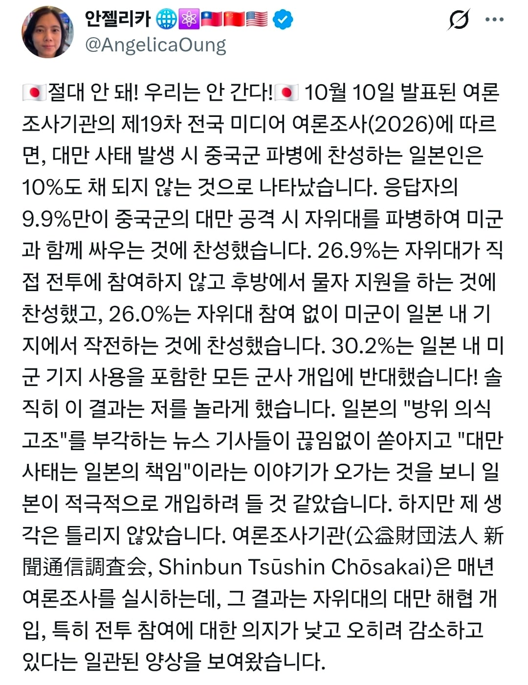
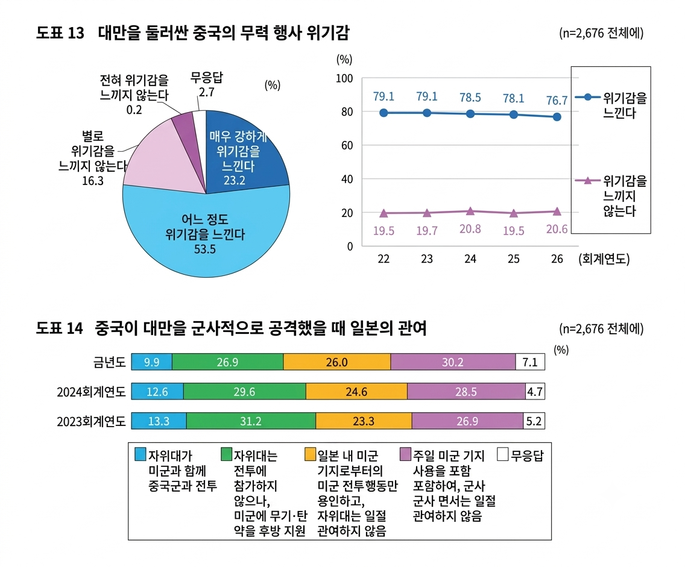

출처: 일본 신문 통신 조사회, https://www.chosakai.gr.jp/wp/wp-content/uploads/2026/10/5fa53aaa50a8c04457253603eee1b155.pdf


출처: 일본 신문 통신 조사회, https://www.chosakai.gr.jp/wp/wp-content/uploads/2026/10/5fa53aaa50a8c04457253603eee1b155.pdf
저 10퍼센트도 많은거지 나나 내 가족이 가야한다 하면 99.9프로는 반대일걸
한국은 더 낮던데
우리는 정전 중인데 파병 한다해도 작을수 밖에 없지. 대만 돕겠다고 주요병력 빼면 북돼지는 누가 막음
대만전쟁이랑 다르지만 이란 호르무즈 파병 찬성은 저것보다 훨씬 높았음 20대남 기준으로 할경우 파병찬성이 반대보다 높았고
우리는 애초에 갈 수가 없음 북한쪽 견제하는거만 해도 빡셀거임
우리는 북괴 새끼들 붙들고 있을께
남의 나라를 위해서 죽고싶은 사람은 드물지
대만 다음은 우리나라, 그리고 그다음은 너네야
아직도 2코나 남았네
죽는것보단 낫지 ㅋㅋㅋ
이런 거 보면 나치시절 우리시대의 평화가 이해가 간다니까
지금보니선녀 ㅋㅋ
2014년부터 제대로 보여줬지 ㅋㅋ
당연한거 아닌가 남의 나라 전쟁에 왜?
중화민국은 장개석이 섬으로 도망쳤을때 이미 끝난건데 뭘 붙들고 앉아있나 싶음.
그 다음은 한국임 아마 일본에선 한반도는 고대부터 중국의 속국이었는데 뭘 붙들고 있냐는 애들 있을듯 ㅋㅋ
뭐 어쩔수없지
우리가 지켜야지 뭔 일본 도움받고 앉아있냐?
전쟁을 결정하는 정치인과 그 가족들은 절대 안가는 전쟁터에 내가 왜가누?ㅋㅋ
당장 다카이치가 말했을때 미국이 지지 안하고 중국이랑 다니는데 일본인 누가 전쟁 하자 하겠음?
상식적으로 군대도 2년 안가고 최근까지는 6개월도 안가던 국가인데
그냥 자기나라 지킬 생각이 없고 국방돌릴 예산과 인력을 반도체나 제조업에 투자해 한국일본 기업들과 경쟁하는 놈들인데
그런 놈들을 위해 지켜줘야함? ㅋㅋ
조별과제(중국견제)는 응 나는 버스탈거야 나 망함 ㅈ되는거 알지? 하며
한국,일본한테 다 던지고
개별과제(반도체,제조업)는 악착같이 하는 놈들인데 좋게 보이겠냐?
그냥 우리도 조별과제 던지고 다같이 C맞자~ 하고 똑같이 해주면 됨
155mm 포탄 팝니다 주문제작 입니다 재고가 7일치 밖에 없어서요
이런거 찬성하는 새끼들은 찾아내서 선발대로 보내야 됨
전쟁터 끌려갈 일 없는 노친네 새끼들이 '아 그래도 자유진영의 승리를 위해서라면 얼마간의 희생쯤은..!' 하면서 찬성하겠지
전쟁특수 한번 누리자
우리가 전쟁 특수 누리자는게 중국에 무기 팔자는건 아닐테니까 대만에 팔자는걸텐데,
대중관계 박살내고 무역 조지는 것보다 대만에 무기 파는게 이익라는거야?
그보다 앞서 미국 참전하는건 맞아?
예전엔 '당연히'였는데 요즘엔 모르겠네
1. 대만 먹고 힘 더 쌔진 중국한테 초 갑질당하는 미래
2. 대만 먹고 힘 더 쌔진 중국한테 침략 당하는 미래
근데 참전하면 막을 수 있음?
그게 문제네
1.일단 중국도 실전 경험없음
2. 이란에 보낸 중국 무기들 다 쓰레기로 판명
3. 대만의 전쟁 의지? 우크라처럼
물품 지원만으로도 중국 막을수 있으면 좋고
일본이 우리 6.25 때 꿀 빤 것처럼 전쟁 특수는 불가능하려나
뭐가됬든 미국이 절대적으로 대만 사수의지가 있어도 우리는 이걸 참여해야하나? 싶을텐데
지금 트럼프 하는 꼬라지 보면 느그들끼리 잘 지켜라 할거같아서 아마 안될거같음
당장 우리부터 대만 도와주려 해도 중국이 북한에게 사주 내릴거니까 할 수 있는 게 없음
오히려 중국이랑 딜을 해서 비싼 대가 받고 불참 약속하는 게 이득임
근데 미국 행동도 그럴고 우크라이나 핵 다 포기해도 핵 가지고 있는 상황보다 안좋아지는거 보면 사실 동맹이라 공산당이 침공하면 그 나라 ㅈ된다
핵 발사하는 순간 전세계가 폭격때린다
이런 우리가 익히 알고 있던 전제는 그냥 관념이 돼버린거 같기도해
실제로 과연 다른 나라들이 그런 행동을 할까 싶어
그런건 북한같은 약소국이 핵가지고 깽판쳤을때나 통하는 논리임
냉전시절때도 파리를 위해서 뉴욕을 포기할거냐 라는 질문에 제대로 대답 못하니까 프랑스가 핵 만들었지
지금은 1세계 국가들 단체로 제조업이 좆박는 바람에 그지같은 후진국 혼내주는것도 못하고 있는거고
다카이치가 대만 유사시 일본의 존립위기사태면 개입할 수 있다라고 가능성을 시사해서 지지율이 크게 올랐던 것 아닌가?
그에 대한 여파로 저번 선거에서 자민당이 압승한 것이고.
무엇 때문에 여론 조사가 그 때와 다르게 바뀌었는지 궁금하네
원종이 나라인데 주인님들이 개입 싫다네 ㅋㅋ 배신감 느낄듯
대만놈들 한국도 도와주겠지 하는데 난 글쎄다 싶음 대만놈들 일본 좋아하시잖아 아주 제2나라마냥 좋아들 하더만
대만의 전쟁은 일본의 잃어버린 30년을 끝낼 기회!